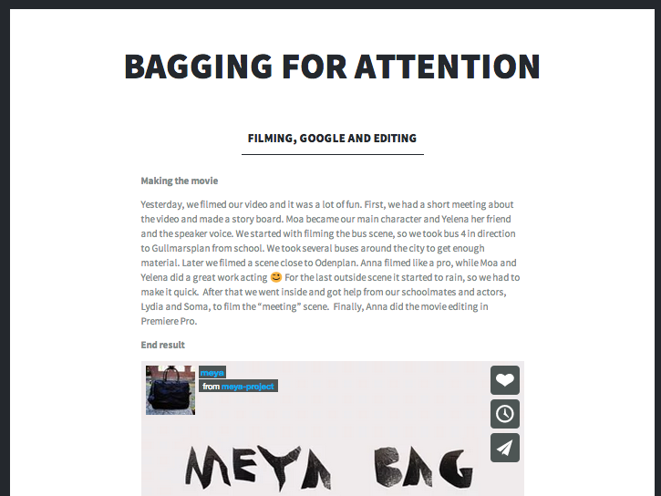

When you are on the move, it's sometimes hard to hear when your phone starts ringing. In this project we made a physical prototype of a bag. It lights up and starts moving a bit when a connected phone gets a call. If you want to, you can reject the call with a ball fastened on the bag. The bag can also help you to automatically mute the phone when you open the handle.
Our starting point was the theme of the course we did the bag for. The theme was wearables and natural materials. The ideas for the functionalities came from experiences of our own, me for example I forget to turn my phone on silent when I get to a class. In the design process it was also important to make the bag aesthetically look nice. Inspiration came from looking at friends bags. The prototype is made from a bag that we modified.
Project Blog for more detailed process.
This is a project I am really proud of, we all engaged a lot in the process. I learned a lot, for example how crafting and programming can be connected.
Video made within the project.